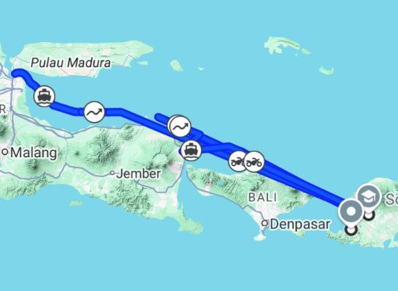

Saya memulai perjalanan dari Solo, menaiki kereta dan dilanjutkan dengan kapal laut dari Pelabuhan Surabaya menuju Pelabuhan Lembar, Lombok. Perjalanan terasa sangat panjang, namun semua rasa lelah hilang saat akhirnya saya menginjakkan kaki di Lombok. Pikiran saya cuma satu: akhirnya bisa ketemu Ririn.
